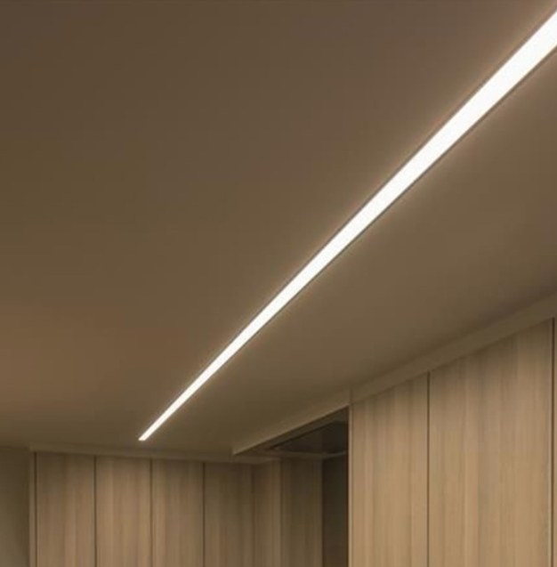
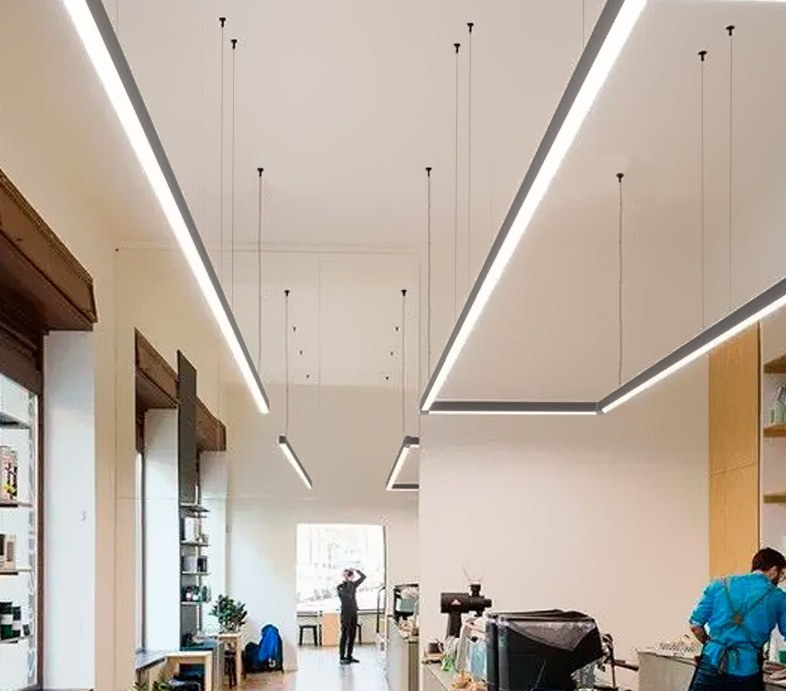
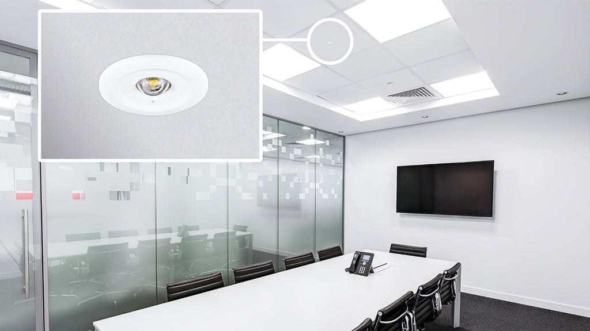

Productos borrador
Más de doscientos productos de iluminación técnica, agrupados por tipo de instalación. Cada producto reúne sus características, sus fotografías y la ficha técnica en PDF.
98 pantallas · 91 borradores · 7
heredadas de la web anterior. La foto es la que sale en la cabecera de esa pantalla.
Pulsa la dirección para abrirla en la web. Se editan en data/textos.json y se
publican volviendo a ejecutar scripts/catalogo/construir_web.py; si dejas el
texto vacío, la cabecera sale solo con el título.
Más de doscientos productos de iluminación técnica, agrupados por tipo de instalación. Cada producto reúne sus características, sus fotografías y la ficha técnica en PDF.
Iluminación de interior para oficina, comercio y vivienda: downlights empotrados y adosados, perfiles lineales, tiras y perfiles LED, proyectores de carril y la colección Retro Gold.
Gama completa de downlights empotrados: cardanes orientables, trimless sin marco, modelos simples, de luz difusa y de temperatura ajustable, y las líneas NEX, ZEN, SLIM, MIN, MIX y OCU. Acabados en blanco y negro, CRI90-95.
Luminarias empotradas tipo cardán, orientables y en acabado blanco. Modelo individual de 20W 3000K y modelo doble de 40W con siete temperaturas de color. CRI90, IP20.

Downlights trimless (sin marco) BIO40 y BIO60, bajo deslumbramiento UGR10, 2700K. Disponibles en ON-OFF y DALI.

Downlights empotrados orientables y de aplicación especial: COR de 20W, wall washer LINK de 10W para lavado de pared, y los modelos NIX de 40W y PLANET de 30W, ambos CRI95.
Downlights empotrados sencillos: Cobfix para lámpara GU10 recambiable, SIM COB de 7W con tres temperaturas a elegir y modelo fijo de 6W IP65.

Downlight empotrable circular COB LED con temperatura de color ajustable mediante switch. 10W y 20W, CRI90, IP44.

Downlights de luz difusa para pasillos y zonas de paso: ARCA de 6 a 15W IP65, ARCADIA de 5W IP54 y DIA de 25W IP44. 4000K.

Downlight empotrable recesado MIN, de 10W y 12W. IP65 y CRI90, en formato reducido para techos de poco fondo.

Wall washer empotrado MIX LED para lavado de pared, con potencia seleccionable de 8, 10 y 12W. CRI90, IP44.

Downlight empotrado fijo NEX, apertura 60º, CRI90. Cuatro potencias (7/12/20/25W), dos temperaturas de color (3000K/4000K) y acabados blanco o negro.
Downlight empotrable orientable OCU. 15W 2400lm 3000K IP20. Acabado blanco.

Downlights SLIM de perfil ultradelgado, en circular y cuadrado, con temperatura fija o tres temperaturas seleccionables mediante switch. De 5 a 25W, CRI90.
Downlight circular SLIM con tres temperaturas de color seleccionables. Cinco potencias, de 6 a 25W.
Downlight circular SLIM en 3000K, 4500K o 6000K a elegir. Seis potencias, de 5 a 25W.

Downlight cuadrado SLIM en 3000K, 4500K o 6000K a elegir, de 6 a 25W.

Downlight cuadrado SLIM con tres temperaturas de color seleccionables mediante switch. De 6 a 25W.

Downlight empotrado fijo ZEN, apertura 70º, CRI90. Siete potencias (7 a 50W) y tres temperaturas de color (2700K/3000K/4000K). Incluye variante Ø185mm DALI.

Downlights de superficie para adosar o suspender, sin obra de empotramiento: la serie SLIM en circular y cuadrado, el modelo TAC y los tubulares.
Downlights adosables SLIM de perfil ultradelgado, circulares y cuadrados, con temperatura fija o tres seleccionables. De 5 a 25W, CRI90.
Downlight adosable cuadrado SLIM con tres temperaturas seleccionables. 12, 20 y 25W.

Downlight adosable circular SLIM en 3000K, 4500K o 6000K a elegir. De 5 a 25W.
Downlight adosable circular SLIM con tres temperaturas seleccionables. De 6 a 25W.
Downlight adosable cuadrado SLIM en 3000K, 4500K o 6000K a elegir. 12, 20 y 25W.

Downlight TAC de superficie, también apto para suspender. 20W en 3000K o 4000K, CRI90, IP44.

Downlights tubulares para adosar o suspender: modelo TUBE de 10 y 20W y modelo de superficie en aluminio de 30W IP65.

Perfiles lineales de aluminio para adosar, suspender o empotrar, en secciones y longitudes muy variadas. 4000K y CRI90.
Perfiles lineales en varias secciones (40, 58, 107, M05, M16, MI4 y OVAL) para adosar o suspender. Potencia seleccionable, de 13 a 114W, en 3000K y 4000K.

Perfil lineal MINI para adosar o suspender. Cuatro potencias, de 13 a 31W, en 3000K y 4000K.

Perfil lineal EM05 empotrable, 12W 4000K, CRI90.

Otros perfiles lineales para adosar, suspender o empotrar, de 24 a 40W. CRI90.

Colección Retro Gold: luminarias de acabado dorado para comercio y hostelería, en versión colgante, adosada, empotrada y proyector.
Lámpara colgante SLIM con acabado dorado retro. 6W en 2700K y 3000K.
Luminaria adosada SLIM con acabado dorado retro. 6W en 2700K y 3000K.

Downlights empotrados MOTA con acabado dorado retro, en diámetro 60 y 80 mm. 10W y 15W, con 2700K, 3000K y 4000K.

Proyector CAPI con acabado dorado retro. 6, 8 y 10W a 3000K.

Tiras LED flexibles, los perfiles de aluminio donde montarlas y los accesorios para controlarlas. Sistema completo de iluminación lineal y decorativa.
Tiras LED flexibles de 24V, monocolor y de temperatura ajustable, de 9 a 26W por metro. IP20 para interior e IP65 para zonas húmedas. Conviene montarlas siempre sobre perfil de aluminio.
Tiras LED flexibles de 12V, de 12 y 14W por metro.
Perfiles de aluminio para tiras LED, en tramos de dos metros y con difusor transparente u opal. Para montaje en superficie, empotrados y formatos especiales.
Diecisiete perfiles de superficie, del B1 al B17, en anchos de 7,2 a 88 mm. Tramos de dos metros con dos tapas, difusor y grapas incluidos.
Perfil de aluminio de 45º para montaje en superficie, de 15,8 × 15,8 mm.
Perfiles de aluminio de formato especial.
Perfil de aluminio de 45º, pensado para los encuentros entre pared y techo.
Dieciséis perfiles para empotrar, del A1 al A16, en anchos de 17 a 62 mm. Tramos de dos metros con dos tapas, difusor y grapas incluidos.
Perfil flexible de acero inoxidable, curvable para trazados que no son rectos.
Mandos y controladores para tiras LED monocolor, de temperatura ajustable y RGB: control por radiofrecuencia y controlador smart con WiFi.

Proyectores LED de interior para carril trifásico. Seis familias con distintos formatos, potencias y acabados, de CRI90 a CRI95, en blanco y en negro.
Proyector CAP para carril trifásico, CRI95. De 10 a 30W, con seis temperaturas de color de 2200K a 5000K.

Proyector ZOOM para carril, con lente regulable que abre de 6º a 60º. 20 y 25W, CRI90.

Proyector PIC de diseño minimalista para carril trifásico. 10 y 15W, CRI92.

Proyector CLIP de 27W con apertura variable. CRI95, en 2700K, 3000K y 4000K.
Proyector Gracion de 28W para carril. CRI90, en 3000K y 4000K.

Proyector MODEN para carril trifásico, de 30 y 40W. CRI95, con siete temperaturas de color de 2200K a 5000K.

Equipo lineal compacto para integrar en mobiliario, vitrinas y expositores.

Iluminación de exterior: apliques de pared, balizas de paso y bolardos, faroles, estacas de jardín y plafones de superficie. Protección de IP44 a IP67.
Apliques de pared para exterior, con doble salida de luz hacia arriba y hacia abajo.
Apliques de pared tipo cubo con doble salida de luz, de 6 a 14W. IP54 e IP65, uno de ellos con lámparas GU10 recambiables.

Balizas de paso y bolardos para caminos, jardines y accesos. De 3 a 48W, en IP54 e IP65.
Farol modelo Villa en acero pintado al horno, con su módulo LED de 50W. Para cascos históricos y entornos urbanos tradicionales.

Foco de jardín con pincho GU10 para instalación en tierra. 7W IP54 IK08. Acabado negro. Perfecto para iluminación de zonas verdes y paisajismo.

Plafones de superficie para pared y techo en exterior, de 12 a 44W. De IP44 a IP65, varios con potencia seleccionable.

Luminarias decorativas de diseño para espacios representativos: colgantes circulares, empotradas y de superficie.
Lámpara circular empotrable de 37W a 4000K.

Lámparas colgantes decorativas, en su mayoría circulares, de 8 a 71W. Para recepciones, salas de reuniones y hostelería.
Luminaria circular de superficie NEO, de 24W con tres temperaturas seleccionables.

Iluminación para naves, almacenes y alumbrado viario: campanas de grandes alturas, pantallas estancas, paneles, proyectores y farolas.

Campanas LED para grandes alturas. Cuatro secciones: ALFA (polivalente, de 60 a 300W), CAM (alturas extremas), SOL (compacta y económica) y modelos especiales. Todas IP65.
Campana ALFA para suspender, de 60 a 300W con potencia seleccionable, en 4000K y 5000K. IP65.

Campana CAM para grandes alturas, de 120W a 5000K. IP65.

Campana SOL para suspender, compacta y económica. Potencia seleccionable de 60 a 200W a 5000K, IP65.
Campanas industriales de formato especial: modelo UF y luminaria industrial, ambos de 200W. IP65.

Pantallas estancas LED para entornos industriales y húmedos. Disponibles en 600mm, 1200mm y 1500-1600mm, con grados de protección IP65 e IP66, clase de impacto IK08. Opción DALI 2.
Pantalla estanca de 600 mm, de 12 y 17W, en 4000K y 6000K. IP66, CRI90.

Pantallas estancas de 1200 mm, de 19 a 44W, varias con potencia seleccionable. IP65 e IP66.
Pantalla estanca de 1200 mm con potencia y temperatura seleccionables: 20, 30 y 40W y tres temperaturas de color. IP65.

Pantallas estancas de 1500 y 1600 mm, de 23 a 50W con potencia seleccionable. IP65 e IP66.

Paneles y pantallas LED para oficinas, industria y entornos limpios. Modelos Slim, HI, BURO, TRI y AQUA IP65, más pantallas empotrables y de luz indirecta. De 23 a 60W.

Proyectores LED de alto rendimiento para exteriores e instalaciones industriales. Familias SEC (IP66), PAR (económica) y SLIM (perfil reducido), más los modelos BABILOM y ACL80.
Proyector PAR para exteriores, de gama económica. 50, 100 y 150W en 3000K, 4000K y 6000K. IP65, acabado negro.

Proyector SEC para exteriores, de 50 a 300W y con dos temperaturas seleccionables. IP66, CRI80.

Proyector SLIM de perfil reducido, de 100 a 300W en 4000K y 5000K. IP65.

Farolas LED para alumbrado viario y urbano. Cuatro secciones: LI y ST regulables, SO solar e híbrida, y la colección general MN, VA y Villa.
Colección general de farolas: modelo MN de 100W, modelo VA de 60W y el farol Villa con su módulo LED. IP65.

Farola LI de 30, 60 y 90W, con tres temperaturas de color. IP65, CRI80.
/00FASO16WCCTK/ambiente.jpg)
Farolas solares e híbridas, para instalar sin acometida eléctrica o con apoyo de red. 16 y 20W con batería integrada y detección de presencia.

Farola ST para alumbrado viario, de 30, 60 y 90W con tres temperaturas de color. IP65.

Luminarias para salas blancas, quirófanos y ambientes estériles. IP65, con difusor registrable desde abajo y acabados que aguantan agentes químicos.
Pantallas hospitalarias en dos formatos: 600 × 600 mm y 1200 × 300 mm. De 27 a 65W, IP65.
Pantallas hospitalarias de 600 × 600 mm, de 27 a 65W. IP65, con versiones de color inteligente y Clean Regular.

Pantallas hospitalarias de 1200 × 300 mm, de 36 a 45W. IP65.

Luminarias de emergencia y señalización de recorridos de evacuación.
Catorce modelos de emergencia, de 1 a 18W, empotrables y de superficie, de IP20 a IP65 y varios con autotest. Incluye el proyector Vesubio para naves de gran altura.
Tubo LED T8 de cristal para sustitución directa de fluorescentes. 1500mm 24W. Conexión un lateral. Ahorro energético superior al 50% respecto al tubo convencional.
Fuentes de alimentación de voltaje constante para tiras LED, en 12V y 24V. IP20 para interior e IP65/IP67 para instalaciones expuestas.
Fuentes de alimentación de 24V para tiras LED, en IP65 e IP67.
Fuente de alimentación de 12V para tiras LED, IP65.